Next: Mesh refinement Up: Sensitivity Analysis Previous: Processing the sensitivity Contents
Postprocessing is only done for geometrical design variables. The postprocessing procedure is coded in sensi_coor.c and feasibledirection.c and consists of the following steps:
Now the steps are treated in more detail:
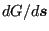
is transformed into a continuous gradient field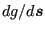
by
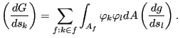 |
(978) |
The continuous gradient field is the sensitivity with respect to a Dirac delta
function perturbation of the design surface at the node at stake. Both fields are coupled by the surface mesh mass matrix 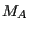
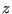
, apart from the design variables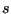
, is introduced with the size of the number of design variables on which the mathematical optimization problem is solved. This control field is connected with the design variables by the following formula
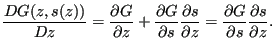 |
(980) |
Since a change in control field does not alter the geometry and hence the
design response G, the partial derivative
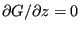 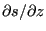
For the filtering itself two different filters are available, an explicit and an implicit one. Ragarding the explicit filter, independent if backward or forward filtering is done, the sensitivity values at a given node are thereby replaced by a weighted sum of the sensitivities of the nodes within a sphere with a user-defined radius. The weighting function is 1 at the node at stake and decreases radially in a user-defined way to zero at the edge of the sphere:
where 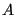
leading to (through the chain rule):
Notice that field is smoother than field and, consequently, field
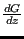 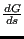 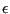
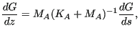 |
(984) |
where
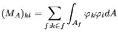 |
(985) |
and
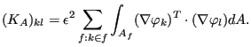 |
(986) |
The gradient is to be projected into the design faces. As in the explicit filter method, the filter radius is a user-defined parameter controlling the smoothness of the filtered sensitivities. A complete filtering cycle than consists of:
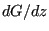
from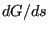
. This is called backward filtering.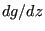
by equation (979).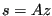
in the explicit case or Equation (982) for the implicit case. This is called forward filtering.For the complete derivation of the explicit and implicit filtering methods the interested user is referred to [7]. If the parameter DIRECTION WEIGHTING is active on the *FILTER card the sensitivity values at a node i are replaced by a weighted sum of the sensitivities at the nodes j within the sphere multiplied by the scalar product of the normal vector at j and the normal vector at i.